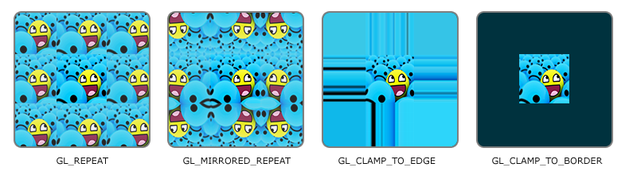
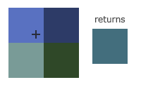

纹理
在前面的章节中，我们可以通过指定顶点的颜色为我们的绘制增加一些效果，可是仅仅是颜色显然是不够的，我们可能需要更多的细节，我比我们要绘制一个箱子，我们不可能去指定每一个像素的颜色，这个时候我们可能需要一个更简单的方式，比如贴图。也被称之为纹理。
在本章节中我们将使用你好 四边形的案例，以及准备了下面的素材，读者可以右键将素材保存。

纹理坐标
一张图必然是矩形，为了和我们绘制的平面关联，必然会给它指定一个坐标，通常我们称之为UV坐标当然也叫做ST坐标。
一张图的左下角为原点坐标(0,0)，右上角为(1,1)。有了坐标就可以和我们绘制平面的顶点进行关联了。
如果我们希望在之前的三角形上面贴上上面的箱子图案的话我们可以这样为每个顶点指定纹理坐标。
float[] texCoords = { 0.0f, 0.0f, // 左下角 1.0f, 0.0f, // 右下角 0.5f, 1.0f // 上中 };
和指定颜色一样，OpenGL会自动为我们插值，补全其余的像素。
U = S = x dimension, V = T = y dimension
纹理的环绕方式
可以看到纹理的坐标是0-1，那么如果指定给顶点的纹理坐标超出这个范围会怎么样呢？OpenGL提供了几种方式处理他们。
| 常量值 | 说明 |
|---|---|
| GL_REPEAT | 对纹理的默认行为。重复纹理图像。 |
| GL_MIRRORED_REPEAT | 和GL_REPEAT一样，但每次重复图片是镜像放置的。 |
| GL_CLAMP_TO_EDGE | 纹理坐标会被约束在0到1之间，超出的部分会重复纹理坐标的边缘，产生一种边缘被拉伸的效果。 |
| GL_CLAMP_TO_BORDER | 超出的坐标为用户指定的边缘颜色。 |
效果图。
我们可以通过glTexParameteri去设置当前Context所操作的纹理的环绕方式。
GL.TexParameteri(GL.GL_TEXTURE_2D, GL.GL_TEXTURE_WRAP_S, GL.GL_MIRRORED_REPEAT); GL.TexParameteri(GL.GL_TEXTURE_2D, GL.GL_TEXTURE_WRAP_T, GL.GL_MIRRORED_REPEAT);
由于我们使用使用的图片是2维的，所以我们使用GL_TEXTURE_2D告诉OpenGL我们当前操作的是一个2D纹理，GL_TEXTURE_WRAP_S则表示水平方向上的坐标（X）。第三个参数则是环绕方式。
如果我们选择GL_CLAMP_TO_BORDER选项，我们还需要指定一个边缘的颜色。这需要使用glTexParameter函数的fv后缀形式，用GL_TEXTURE_BORDER_COLOR作为它的选项，并且传递一个float数组作为边缘的颜色值：
float[] borderColor = { r, g, b, a }; GL.TexParameterfv(GL.GL_TEXTURE_2D, GL.GL_TEXTURE_BORDER_COLOR, ref borderColor[0]);
纹理过滤
我们使用的2D纹理是一张图片，它是有分辨率大小的，当贴在一个物体表面的时候必然会产生一些像素的映射，而在图片中像素的单位是整数的，事实上真实的渲染中很难做到，刚好图片中的每个像素都能对应物体表面的每一个像素。最典型的一个例子就是，在3D空间中，我们的物体是可以放大缩小的，而图片的分辨率确实固定的。
而纹理的过滤方式可以告诉OpenGL面对这种情况的时候应当如何处理。OpenGL纹理过滤有很多个选项，但是现在我们只讨论最重要的两种：GL_NEAREST和GL_LINEAR。
GL_NEAREST（也叫邻近过滤，Nearest Neighbor Filtering）是OpenGL默认的纹理过滤方式。当设置为GL_NEAREST的时候，OpenGL会选择中心点最接近纹理坐标的那个像素。下图中你可以看到四个像素，加号代表纹理坐标。左上角那个纹理像素的中心距离纹理坐标最近，所以它会被选择为样本颜色：

GL_LINEAR（也叫线性过滤，(Bi)linear Filtering）它会基于纹理坐标附近的纹理像素，计算出一个插值，近似出这些纹理像素之间的颜色。一个纹理像素的中心距离纹理坐标越近，那么这个纹理像素的颜色对最终的样本颜色的贡献越大。下图中你可以看到返回的颜色是邻近像素的混合色：
那么这两种纹理过滤方式有怎样的视觉效果呢？让我们看看在一个很大的物体上应用一张低分辨率的纹理会发生什么吧（纹理被放大了，每个纹理像素都能看到）：

GL_NEAREST更像是以马赛克的方式处理，而GL_LINEAR则会自动补插。
当进行放大(Magnify)和缩小(Minify)操作的时候可以设置纹理过滤的选项，比如你可以在纹理被缩小的时候使用邻近过滤，被放大时使用线性过滤。我们需要使用glTexParameter*函数为放大和缩小指定过滤方式。这段代码看起来会和纹理环绕方式的设置很相似：
GL.TexParameteri(GL.GL_TEXTURE_2D, GL.GL_TEXTURE_MIN_FILTER, GL.GL_NEAREST); GL.TexParameteri(GL.GL_TEXTURE_2D, GL.GL_TEXTURE_MAG_FILTER, GL.GL_LINEAR);
多级渐远纹理
假设我们做了一个游戏场景，有一个箱子，为了让箱子看上去更加的逼真我们使用了一个很高分辨率的纹理，但是现在这个现在在一个很远的地方，在屏幕上可能只占了极少的像素。渲染时将造成极大的资源浪费。所以我们希望遇到类似的情况仅仅使用一张很小分辨率的纹理渲染就可以了。
想一想这个场景是不是很常见？比如我们使用的地图软件。当我们把地图缩小的时候一些街道根本就不会显示，也是差不多的原理。
OpenGL使用一种叫做多级渐远纹理(Mipmap)的概念来解决这个问题，它简单来说就是一系列的纹理图像，后一个纹理图像是前一个的二分之一。多级渐远纹理背后的理念很简单：距观察者的距离超过一定的阈值，OpenGL会使用不同的多级渐远纹理，即最适合物体的距离的那个。由于距离远，解析度不高也不会被用户注意到。同时，多级渐远纹理另一加分之处是它的性能非常好。让我们看一下多级渐远纹理是什么样子的：

手工为每个纹理图像创建一系列多级渐远纹理很麻烦，幸好OpenGL有一个glGenerateMipmaps函数，在创建完一个纹理后调用它OpenGL就会承担接下来的所有工作了。后面的教程中你会看到该如何使用它。
在渲染中切换多级渐远纹理级别(Level)时，OpenGL在两个不同级别的多级渐远纹理层之间会产生不真实的生硬边界。就像普通的纹理过滤一样，切换多级渐远纹理级别时你也可以在两个不同多级渐远纹理级别之间使用NEAREST和LINEAR过滤。为了指定不同多级渐远纹理级别之间的过滤方式，你可以使用下面四个选项中的一个代替原有的过滤方式：
| 常量值 | 说明 |
|---|---|
| GL_NEAREST_MIPMAP_NEAREST | 使用最邻近的多级渐远纹理来匹配像素大小，并使用邻近插值进行纹理采样 |
| GL_LINEAR_MIPMAP_NEAREST | 使用最邻近的多级渐远纹理级别，并使用线性插值进行采样 |
| GL_NEAREST_MIPMAP_LINEAR | 在两个最匹配像素大小的多级渐远纹理之间进行线性插值，使用邻近插值进行采样 |
| GL_LINEAR_MIPMAP_LINEAR | 在两个邻近的多级渐远纹理之间使用线性插值，并使用线性插值进行采样 |
就像纹理过滤一样，我们可以使用glTexParameteri将过滤方式设置为前面四种提到的方法之一：
GL.TexParameteri(GL.GL_TEXTURE_2D, GL.GL_TEXTURE_MIN_FILTER, GL.GL_LINEAR_MIPMAP_LINEAR); GL.TexParameteri(GL.GL_TEXTURE_2D, GL.GL_TEXTURE_MAG_FILTER, GL.GL_LINEAR);
一个常见的错误是，将放大过滤的选项设置为多级渐远纹理过滤选项之一。这样没有任何效果，因为多级渐远纹理主要是使用在纹理被缩小的情况下的：纹理放大不会使用多级渐远纹理，为放大过滤设置多级渐远纹理的选项会产生一个GL_INVALID_ENUM错误代码。
像素提取
在创建纹理之前，我们需要获取图片的像素信息，在.Net Framework中我们可以使用System.Drawing.Bitmap，但是很遗憾Bitmap对象仅存在.Net Framework中。如果程序仅运行在Windows系统中，读者可以使用Bitmap对象。作者也在抽空尝试编写解析图片像素的程序。但是在目前的教程中，我们采用Bitmap对象进行像素获取。
读者目前可以使用第三方库，比如SharpImage，或者作者在这里提供了一个简易的类。
/* * Note: this code can only run in .Net Framework. * Becasue .Net Core or .NetX not have System.Drawing.Bitmap; */ public class PixelsHelper { public struct PixelsInfo { public int Width; public int Height; public int Channel; public byte[] Pixels; } public static PixelsInfo GetPixelsInfo(string strImageFile, PixelFormat format) { PixelsInfo pi = new PixelsInfo(); Bitmap bmp = (Bitmap)Bitmap.FromFile(strImageFile); BitmapData bmpData = bmp.LockBits(new Rectangle(Point.Empty, bmp.Size), ImageLockMode.ReadOnly, format); pi.Width = bmp.Width; pi.Height = bmp.Height; pi.Channel = (bmpData.Stride / 4 * 4) / bmp.Width; pi.Pixels = new byte[pi.Width * pi.Height * pi.Channel]; byte[] bySrc = new byte[bmpData.Stride * bmpData.Height]; Marshal.Copy(bmpData.Scan0, bySrc, 0, bySrc.Length); int nLineWidth = pi.Channel * pi.Width; int nIndexDst = 0; int nIndexSrc = (bmp.Height - 1) * bmpData.Stride; for (int y = bmp.Height - 1; y >= 0; y--) { for (int x = 0, nLen = bmp.Width * pi.Channel; x < nLen; x += pi.Channel) { int nTemp = nIndexSrc + x + pi.Channel - 1; for (int c = 0; c < pi.Channel; c++) { pi.Pixels[nIndexDst++] = bySrc[nTemp - c]; } } nIndexSrc -= bmpData.Stride; } bmp.UnlockBits(bmpData); bmp.Dispose(); return pi; } }
创建纹理
我们以你好 四边形作为案例进行代码修改，首先顶点数据中我们需要添加纹理坐标。
float[] vertices = { // location // color // texcoord -0.5f, 0.5f, 0.0f, 1.1f, 0.0f, 0.0f, 0.0f, 1.0f, // 左上角 0.5f, 0.5f, 0.0f, 0.0f, 1.1f, 0.0f, 1.0f, 1.0f, // 右上角 0.5f, -0.5f, 0.0f, 0.0f, 0.0f, 1.1f, 1.0f, 0.0f, // 右下角 -0.5f, -0.5f, 0.0f, 1.1f, 0.0f, 1.1f, 0.0f, 0.0f, // 左下角 };
你可以看到现在有3组数据在里面，聪明的你肯定已经知道如何设置顶点属性。

GL.VertexAttribPointer(0, 3, GL.GL_FLOAT, false, 8 * sizeof(float), IntPtr.Zero); GL.EnableVertexAttribArray(0); GL.VertexAttribPointer(1, 3, GL.GL_FLOAT, false, 8 * sizeof(float), (IntPtr)(3 * sizeof(float))); GL.EnableVertexAttribArray(1); GL.VertexAttribPointer(2, 3, GL.GL_FLOAT, false, 8 * sizeof(float), (IntPtr)(6 * sizeof(float))); GL.EnableVertexAttribArray(2);
同样我们也需要修改顶点着色器
#version 330 core
layout (location = 0) in vec3 dotPos;
layout (location = 1) in vec3 dotColor;
layout (location = 2) in vec2 dotTexCoord;
out vec3 DotColor;
out vec2 DotTexCoord;
void main(){
gl_Position = vec4(dotPos, 1.0);
DotColor = dotColor;
DotTexCoord = dotTexCoord;
}
片段着色器。
#version 330 core
in vec3 DotColor;
in vec2 DotTexCoord;
out vec4 fragColor;
uniform sampler2D u_texture;
void main(){
fragColor = texture(u_texture, DotTexCoord);
}
texture是GLSL的一个内置函数，可以合成我们需要的像素颜色，他需要一个纹理和坐标作为参数。接下来就是如何传递纹理给u_texture了。和其他对象创建一下我们需要glGenXXXglBindXXX。
var texture = GL.GenTextures(); GL.BindTexture(GL.GL_TEXTURE_2D, texture); GL.TexParameteri(GL.GL_TEXTURE_2D, GL.GL_TEXTURE_WRAP_S, (int)GL.GL_REPEAT); GL.TexParameteri(GL.GL_TEXTURE_2D, GL.GL_TEXTURE_WRAP_T, (int)GL.GL_REPEAT); GL.TexParameteri(GL.GL_TEXTURE_2D, GL.GL_TEXTURE_MIN_FILTER, (int)GL.GL_LINEAR); GL.TexParameteri(GL.GL_TEXTURE_2D, GL.GL_TEXTURE_MAG_FILTER, (int)GL.GL_LINEAR);
接下来是准备好像素数据然后传递给texture。
var pi = PixelsHelper.GetPixelsInfo("./container.png", PixelFormat.Format24bppRgb); IntPtr ptr = Marshal.AllocHGlobal(pi.Pixels.Length); Marshal.Copy(pi.Pixels, 0, ptr, pi.Pixels.Length); GL.TexImage2D( GL.GL_TEXTURE_2D, 0, // 指定多级渐远纹理的级别，我们不使用手动，填写0。 (int)GL.GL_RGB, // 告诉OpenGL以什么样的数据格式保存 pi.Width, pi.Height, 0, // 历史原因，反正填写0就对了。 GL.GL_RGB, // 像素的数据格式 GL.GL_UNSIGNED_BYTE, // 像素是无符号byte ptr // 像素数据。 ); Marshal.FreeHGlobal(ptr); GL.GenerateMipmap(GL.GL_TEXTURE_2D); // 创建多级纹理
当调用glTexImage2D时，当前绑定的纹理对象就会被附加上纹理图像。然而，目前只有基本级别(Base-level)的纹理图像被加载了，如果要使用多级渐远纹理，我们必须手动设置所有不同的图像（不断递增第二个参数）。或者，直接在生成纹理之后调用glGenerateMipmap。这会为当前绑定的纹理自动生成所有需要的多级渐远纹理。
在STGL中已经对2D纹理进行了部分的封装，你可以使用下面的代码。
var pi = PixelsHelper.GetPixelsInfo("./container.png", PixelFormat.Format24bppRgb); var texture = GLTexture2D.Create(); texture.SetPixels(pi.Pixels, (int)GL.GL_RGB, pi.Width, pi.Height, GL.GL_RGB);
然后运行程序你就会看到如下的效果。
在vertices和顶点着色器中没有还加入了颜色，如果我们将片段着色器改成如下代码。
fragColor = texture(u_texture, DotTexCoord) * vec4(DotColor, 1.0);
你将看到如下混合效果。
纹理单元
不知道读者有没有注意到，在上面的代码，我们并没有对片段着色器中的u_texture赋值，但是却可以得到正确的效果。是的，纹理的赋值比较特殊，之前的赋值我们是通过glUniformX(name,value...)的方式赋值的，如果确实要通过glUniformX去赋值的话那么value必然就是像素。
可是像素我们已经通过glTexImage2D拷贝到了显卡中了。无需再赋值了，那么既然已经不用赋值了uniform sampler2D u_texture;的意义又在哪里呢？
当然有意义，我们只是不用通过glUniformX去赋值像素数据了，那么，如果想使用多个纹理怎么办？
还记得之前VAO中的attribute pointer吗？纹理和这个差不多。也是通过这样的方式进行数据关联，称之为纹理单元。因为我们并没有编写额外的代码，所以我们的纹理被绑定到了0号单元上，它是默认被激活的。
而当我们要使用多个纹理的时候，就必须额外的激活其他的纹理单元，通过glActiveTexture函数可以激活一个纹理单元。我们应当是先激活纹理单元再绑定纹理。
OpenGL至少保证有16个纹理单元供你使用，也就是说你可以激活从GL_TEXTURE0到GL_TEXTRUE15。它们都是按顺序定义的，所以我们也可以通过GL_TEXTURE0 + 8的方式获得GL_TEXTURE8，这在当我们需要循环一些纹理单元的时候会很有用。
接下来我们修改一下片段着色器代码。
#version 330 core
in vec3 DotColor;
in vec2 DotTexCoord;
out vec4 fragColor;
uniform sampler2D u_texture_1;
uniform sampler2D u_texture_2;
void main(){
fragColor = mix(texture(u_texture_1, DotTexCoord), texture(u_texture_2, DotTexCoord), 0.2);
}";
在着色器中接收两个纹理，所以我们也要创建两个纹理。
var pi = PixelsHelper.GetPixelsInfo("./container.png", PixelFormat.Format24bppRgb); var texture_1 = GLTexture2D.Create(); texture_1.BindUnit(GLTexture2D.Unit.Texture00); // 绑定到0号通道 texture_1.SetPixels(pi.Pixels, (int)GL.GL_RGB, pi.Width, pi.Height, GL.GL_RGB); pi = PixelsHelper.GetPixelsInfo("./awesomeface.png", PixelFormat.Format24bppRgb); var texture_2 = GLTexture2D.Create(GLTexture2D.Unit.Texture01); // 创建时候就绑定到1号通道。 texture_2.SetPixels(pi.Pixels, (int)GL.GL_RGB, pi.Width, pi.Height, GL.GL_RGB); program.SetUniform("u_texture_1", 0); program.SetUniform("u_texture_2", 1);
注意：代码不能写成下面的样子。
var pi = PixelsHelper.GetPixelsInfo("./container.png", PixelFormat.Format24bppRgb); var texture_1 = GLTexture2D.Create();// 若没有绑定，默认是0号通道。 texture_1.SetPixels(pi.Pixels, (int)GL.GL_RGB, pi.Width, pi.Height, GL.GL_RGB);// 此时活动通道是0号 texture_1.BindUnit(GLTexture2D.Unit.Texture00); // 激活并关联到0号通道。 pi = PixelsHelper.GetPixelsInfo("./awesomeface.png", PixelFormat.Format24bppRgb); var texture_2 = GLTexture2D.Create(); texture_2.SetPixels(pi.Pixels, (int)GL.GL_RGB, pi.Width, pi.Height, GL.GL_RGB);// 此时活动通道还是0号 texture_2.BindUnit(GLTexture2D.Unit.Texture01); // 虽然数据会关联定到1号通道，但是上一句代码已经覆盖掉了原本0号通道的关联。 var program = GLProgram.Create(m_str_vertex_shader, m_str_fragment_shader); program.Use(); program.SetUniform("u_texture_1", 0); program.SetUniform("u_texture_2", 1);
虽然我们在设置顶点属性的时候用的是如下的代码。
GL.VertexAttribPointer(0, 3, ...); GL.EnableVertexAttribArray(0); GL.VertexAttribPointer(1, 3, ...); GL.EnableVertexAttribArray(1);
但是可以看到我们在设置顶点属性的时候是指定了通道号的，而纹理的设置函数中并没有这个参数，只能通过glActiveTexture来激活一个通道。而SetPixels内部调用的是glTexImage2D函数，它会自动关联当前活动的通道，所以在没有激活新的通道时会导致第二次的SetPixels自动关联到上一个的通道。当然如果写成下面的形式也是可以的。
var program = GLProgram.Create(m_str_vertex_shader, m_str_fragment_shader); program.Use(); texture_1.BindUnit(GLTexture2D.Unit.Texture00); // 激活并关联到0号通道。 texture_2.BindUnit(GLTexture2D.Unit.Texture01); // 激活并关联到1号通道。 program.SetUniform("u_texture_1", 0); program.SetUniform("u_texture_2", 1);
运行后你会看到如下效果。
同样你也可以在片段着色器中将我们传入的颜色也一起混合。
fragColor = mix(texture(u_texture_1, DotTexCoord), texture(u_texture_2, DotTexCoord), 0.2) * vec4(DotColor, 1);